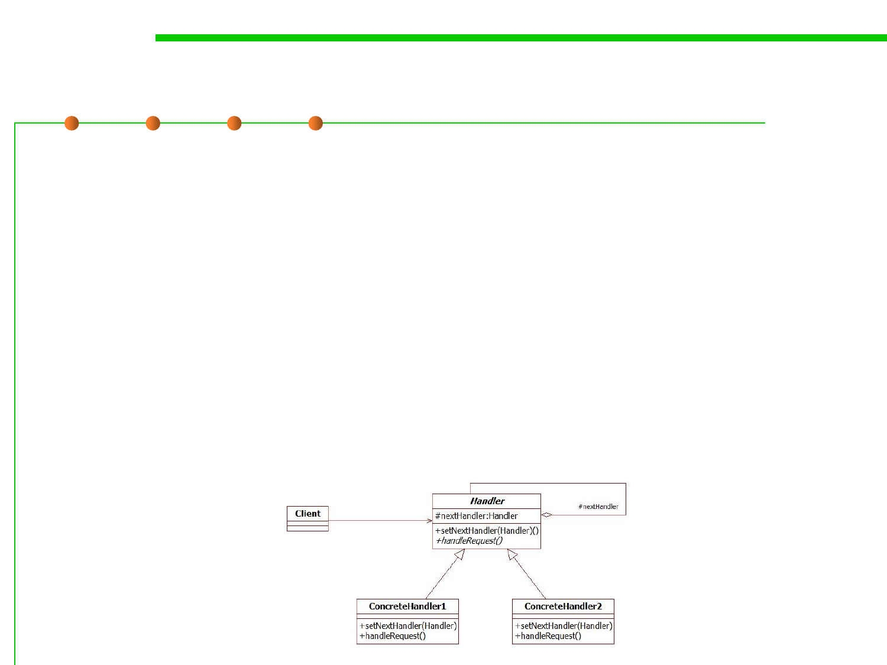

Chain of Responsibility
6.2 Design Patterns for Maintainability
▪ The Handler class is the parent abstract class for all the objects that can
handle requests:
– The nextHandler variable is a reference that points to the next handler. If the
request cannot be processed by the object it will be passed to the
nextHandler for processing.
▪ The ConcreteHandler are the concrete child classes that handles the
requests.
▪ In its handelRequest method it checks to see if it can process the request, if
yes it will process the request and return, if not the request will be passed to
the next handler. This logic is repeated until the request is fulfilled.